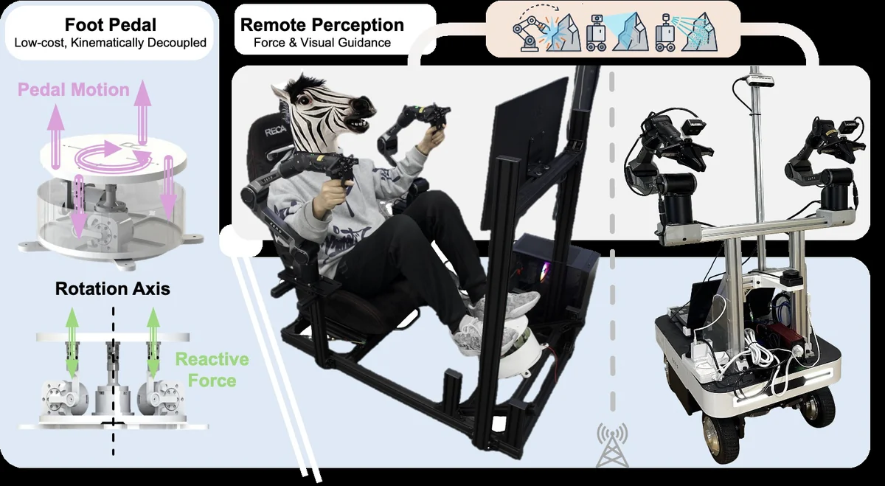
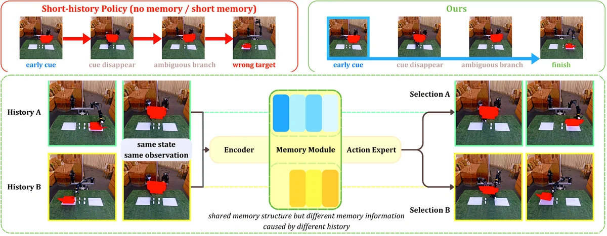
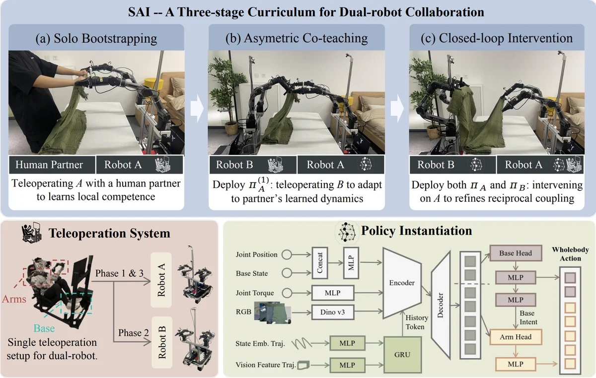
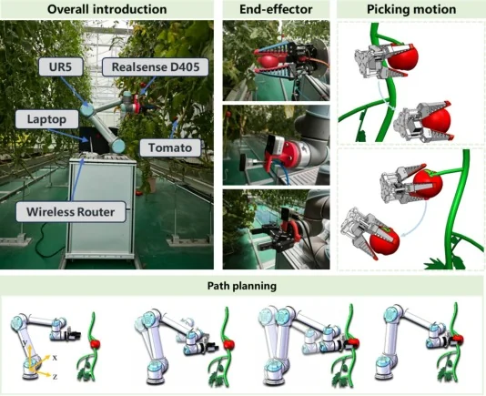
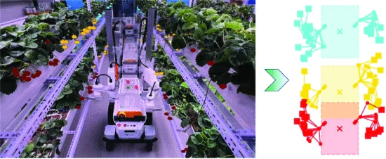
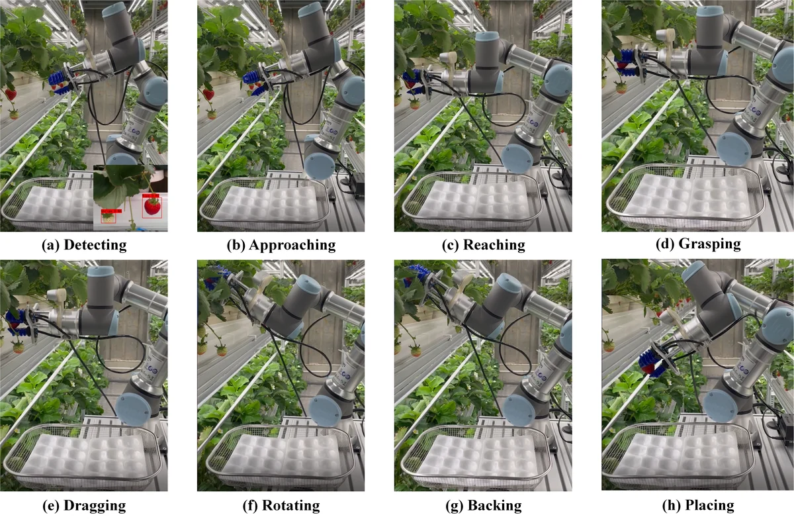
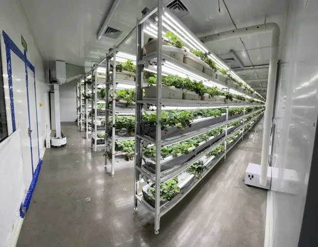

TriPilot-FF: Coordinated Whole-Body Teleoperation with Force Feedback
* Equal advising
Preprint 2026, [Paper]
email: gqren@zju.edu.cn
I am a postdoc researcher in the Zhang Lab at Robotics Institute, Carnegie Mellon University, working with Ji Zhang. I am also a doctoral supervisor & industry mentor at ZJU-UIUC Institute, Zhejiang University. I received a Dr. Eng. degree in robotics from Zhejiang University, advised by K.C. Ting and Liangjing Yang. During my Ph.D., I was fortunate to work in the Distributed Autonomous Systems Laborator (DASLAB) led by Girish Chowdhary at UIUC.
My general research interest is robot learning for mobile manipulation, and its application in dirty, dangerous, dull, and dear tasks. We are building Physical AI that delivers reliable dexterity anywhere in the real world for everyday life. If you're interested, please drop me an email.

* Equal advising
Preprint 2026, [Paper]

* Equal advising
Preprint 2026, [Paper]

* Equal advising
Preprint 2026, [Paper]

* Equal advising
COMPAG 2026, [Paper]

* Equal advising
IROS 2025, [Paper]

JFR 2024, [Paper]
Most-cited Paper Award
